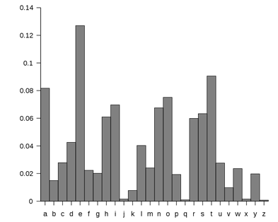
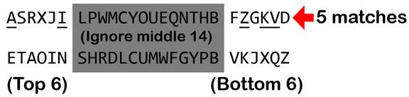
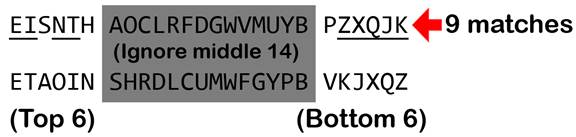

Topics Covered In This Chapter:
· Letter Frequency and ETAOIN
· The sort() Method’s key and reverse Keyword Arguments
· Passing Functions as Values Instead of Calling Functions
· Converting Dictionaries to Lists with the keys(), values(), items() Dictionary Methods
The ineffable talent for finding patterns in chaos cannot do its thing unless he immerses himself in the chaos first. If they do contain patterns, he does not see them just now, in any rational way. But there may be some subrational part of his mind that can go to work, now that the letters have passed before his eyes and through his pencil, and that may suddenly present him with a gift-wrapped clue--or even a full solution--a few weeks from now while he is shaving or antenna-twiddling.
“Cryptonomicon” by Neal Stephenson
A coin has 2 sides, and when you flip a coin, about half the time it will come up heads and half of the time it comes up tails. The frequency (that is, how often) that the coin flip ends up heads is the same as the frequency that it ends up tails: about one-half or 50%.
There are 26 letters in the English alphabet, but they don’t each appear an equal amount of the time in English text. Some letters are used more often than others. For example, if you look at the letters in this book you will find that the letters E, T, A and O occur very frequently in English words. But the letters J, X, Q, and Z are rarely found in English text. We can use this fact to help crack Vigenère-encrypted messages. This technique is called frequency analysis.
Here are the frequencies of the 26 letters in average English text. This graph is compiled by grabbing English text from books, newspapers, and other sources to count often each letter appears:
Figure 20-1. Letter frequency of normal English.

If we sort these in order of greatest frequency to least, we find that E is the most frequent letter, followed by T, followed by A, and so on:
Figure 20-2. Letter frequency of normal English, sorted.

The word “ETAOIN” is a handy way to remember the six most frequent letters. The full list of letters ordered by frequency is “ETAOINSHRDLCUMWFGYPBVKJXQZ”.
Think about the transposition cipher: Messages encrypted with the transposition cipher contain all the original letters of the original English plaintext, except in a different order. But the frequency of each letter in the ciphertext remains the same: E, T, and A should occur much more often than Q and Z. Because they are the same letters, the frequencies of these letters in the ciphertext are the same as the plaintext.
The Caesar and simple substitution ciphers have their letters replaced, but you can still count the frequency of the letters. The letters may be different but the frequencies are the same. There should be letters that occur the most often in the ciphertext. These letters are good candidates for being cipherletters for the E, T, or A letters. The letters in the ciphertext that occur least are more likely to be X, Q, and Z.
This counting of letters and how frequently they appear in both plaintexts and ciphertexts is called frequency analysis.
Since the Vigenère cipher is essentially multiple Caesar cipher keys used in the same message, we can use frequency analysis to hack each subkey one at a time based on the letter frequency of the attempted decryptions. We can’t use English word detection, since any word in the ciphertext will have been encrypted with multiple subkeys. But we don’t need full words, we can analyze the letter frequency of each subkey’s decrypted text. (This will be explained more in the next chapter.)
Matching Letter Frequencies
By “matching the letter frequency of regular English” we could try several different algorithms. The one used in our hacking program will simply order the letters from most frequent to least frequent. We will calculate what we will call in this book a frequency match score for this ordering of frequencies. To calculate the frequency match score for a string, the score starts at 0 and each time one of the letters E, T, A, O, I, N appears among the six most frequent letters of the string, we add a point to the score. And each time one of the letters V, K, J, X, Q, or Z appears among the six least frequent letters of the string, we add a point to the score. The frequency match score for a string will be an integer from 0 (meaning the letter frequency of the string is completely unlike regular English’s letter frequency) to 12 (meaning it is identical to regular English’s letter frequency).
An Example of Calculating Frequency Match Score
For example, look at this ciphertext which was encrypted with a simple substitution cipher:
“Sy l nlx sr pyyacao l ylwj eiswi upar lulsxrj isr sxrjsxwjr, ia esmm rwctjsxsza sj wmpramh, lxo txmarr jia aqsoaxwa sr pqaceiamnsxu, ia esmm caytra jp famsaqa sj. Sy, px jia pjiac ilxo, ia sr pyyacao rpnajisxu eiswi lyypcor l calrpx ypc lwjsxu sx lwwpcolxwa jp isr sxrjsxwjr, ia esmm lwwabj sj aqax px jia rmsuijarj aqsoaxwa. Jia pcsusx py nhjir sr agbmlsxao sx jisr elh. -Facjclxo Ctrramm”
If we count the frequency of each letter and then arrange them by order of its frequency, we end up with this ordering: ASRXJILPWMCYOUEQNTHBFZGKVD. That is, A is the most frequent letter, S is the 2nd most frequent letter, and so on down to the letter D, which appears the least frequently.
The six most frequent letters in this ordering are A, S, R, X, J, and I. Only two of these letters (A and I) appear in the ETAOIN set of letters. The six least frequent letters in the ordering are F, Z, G, K, V, and D. Only three of these letters (Z, K, and V) appear in the VKJXQZ set of letters. So the frequency ordering ASRXJILPWMCYOUEQNTHBFZGKVD (which comes from the above ciphertext) has a frequency match score of 5.

Figure 20-3. How the frequency match score of ASRXJILPWMCYOUEQNTHBFZGKVD is calculated.
The above ciphertext was encrypted with a simple substitution cipher, which is why the frequency match score isn’t very high. The letter frequencies of simple substitution ciphertext won’t match regular English’s letter frequencies.
Another Example of Calculating Frequency Match Score
For another example, look at this ciphertext which was encrypted with a transposition cipher:
“I rc ascwuiluhnviwuetnh,osgaa ice tipeeeee slnatsfietgi tittynecenisl. e fo f fnc isltn sn o a yrs sd onisli ,l erglei trhfmwfrogotn,l stcofiit.aea wesn,lnc ee w,l eIh eeehoer ros iol er snh nl oahsts ilasvih tvfeh rtira id thatnie.im ei-dlmf i thszonsisehroe, aiehcdsanahiec gv gyedsB affcahiecesd d lee onsdihsoc nin cethiTitx eRneahgin r e teom fbiotd n ntacscwevhtdhnhpiwru”
The ordering of most to least frequent letters in the above ciphertext is: EISNTHAOCLRFDGWVMUYBPZXQJK. (That is, E is the most frequent letter, I the 2nd most frequent letter, and so on.)
Of the top and bottom six letters in this ordering, the four letters E, I, N, and T appear in ETAOIN and the five letters Z, X, Q, J, and K appear in VKJXQZ. This gives the ordering a frequency match score of 9.

Figure 20-4. How the frequency match score of EISNTHAOCLRFDGWVMUYBPZXQJK is calculated.
The above ciphertext was encrypted with a transposition cipher, so it has all the same letters as the original English plaintext (their order has just been switched around.) This is why the frequency ordering has a much higher frequency match score.
Hacking Each Subkey
When hacking the Vigenère cipher, we try to decrypt the letters for the first subkey with each of the 26 possible letters and find out which decrypted ciphertext produces a letter frequency that closest matches that of regular English. This is a good indication that we have found the correct subkey.
We can do this same thing for the second, third, fourth, and fifth subkey as well. Since we are only doing 26 decryptions for each subkey individually, our computer only has to perform 26 + 26 + 26 + 26 + 26, or 156, decryptions. This is much easier than trying to do 11,881,376 decryptions!
So, hacking the Vigenère cipher sounds simple in theory. Just try all 26 possible subkeys for each subkey in the key, and see which one produces decrypted text that has a letter frequency that closest matches the letter frequency of English.
It turns out that there are a few more steps than this, though, but we can cover them when we write the hacking program in the next chapter. For this chapter, we will write a module with several helpful functions that perform frequency analysis. This module will have these functions:
· getLetterCount() – This function will take a string parameter and return a dictionary that has the count of how often each letter appears in the string.
· getFrequencyOrder() – This function will take a string parameter and return a string of the 26 letters ordered from those that appear most frequently to least frequently in the string parameter.
· englishFreqMatchScore() – This function will take a string parameter and return an integer from 0 to 12 of the string’s letter frequency match score.
The Code for Matching Letter Frequencies
Type in the following code into the file editor, and then save it as freqAnalysis.py. Press F5 to run the program.
Source code for freqAnalysis.py
1. # Frequency Finder
2. # http://inventwithpython.com/hacking (BSD Licensed)
3.
4.
5.
6. # frequency taken from http://en.wikipedia.org/wiki/Letter_frequency
7. englishLetterFreq = {'E': 12.70, 'T': 9.06, 'A': 8.17, 'O': 7.51, 'I': 6.97, 'N': 6.75, 'S': 6.33, 'H': 6.09, 'R': 5.99, 'D': 4.25, 'L': 4.03, 'C': 2.78, 'U': 2.76, 'M': 2.41, 'W': 2.36, 'F': 2.23, 'G': 2.02, 'Y': 1.97, 'P': 1.93, 'B': 1.29, 'V': 0.98, 'K': 0.77, 'J': 0.15, 'X': 0.15, 'Q': 0.10, 'Z': 0.07}
8. ETAOIN = 'ETAOINSHRDLCUMWFGYPBVKJXQZ'
9. LETTERS = 'ABCDEFGHIJKLMNOPQRSTUVWXYZ'
10.
11.
12.
13. def getLetterCount(message):
14. # Returns a dictionary with keys of single letters and values of the
15. # count of how many times they appear in the message parameter.
16. letterCount = {'A': 0, 'B': 0, 'C': 0, 'D': 0, 'E': 0, 'F': 0, 'G': 0, 'H': 0, 'I': 0, 'J': 0, 'K': 0, 'L': 0, 'M': 0, 'N': 0, 'O': 0, 'P': 0, 'Q': 0, 'R': 0, 'S': 0, 'T': 0, 'U': 0, 'V': 0, 'W': 0, 'X': 0, 'Y': 0, 'Z': 0}
17.
18. for letter in message.upper():
19. if letter in LETTERS:
20. letterCount[letter] += 1
21.
22. return letterCount
23.
24.
25. def getItemAtIndexZero(x):
26. return x[0]
27.
28.
29. def getFrequencyOrder(message):
30. # Returns a string of the alphabet letters arranged in order of most
31. # frequently occurring in the message parameter.
32.
33. # first, get a dictionary of each letter and its frequency count
34. letterToFreq = getLetterCount(message)
35.
36. # second, make a dictionary of each frequency count to each letter(s)
37. # with that frequency
38. freqToLetter = {}
39. for letter in LETTERS:
40. if letterToFreq[letter] not in freqToLetter:
41. freqToLetter[letterToFreq[letter]] = [letter]
42. else:
43. freqToLetter[letterToFreq[letter]].append(letter)
44.
45. # third, put each list of letters in reverse "ETAOIN" order, and then
46. # convert it to a string
47. for freq in freqToLetter:
48. freqToLetter[freq].sort(key=ETAOIN.find, reverse=True)
49. freqToLetter[freq] = ''.join(freqToLetter[freq])
50.
51. # fourth, convert the freqToLetter dictionary to a list of tuple
52. # pairs (key, value), then sort them
53. freqPairs = list(freqToLetter.items())
54. freqPairs.sort(key=getItemAtIndexZero, reverse=True)
55.
56. # fifth, now that the letters are ordered by frequency, extract all
57. # the letters for the final string
58. freqOrder = []
59. for freqPair in freqPairs:
60. freqOrder.append(freqPair[1])
61.
62. return ''.join(freqOrder)
63.
64.
65. def englishFreqMatchScore(message):
66. # Return the number of matches that the string in the message
67. # parameter has when its letter frequency is compared to English
68. # letter frequency. A "match" is how many of its six most frequent
69. # and six least frequent letters is among the six most frequent and
70. # six least frequent letters for English.
71. freqOrder = getFrequencyOrder(message)
72.
73. matchScore = 0
74. # Find how many matches for the six most common letters there are.
75. for commonLetter in ETAOIN[:6]:
76. if commonLetter in freqOrder[:6]:
77. matchScore += 1
78. # Find how many matches for the six least common letters there are.
79. for uncommonLetter in ETAOIN[-6:]:
80. if uncommonLetter in freqOrder[-6:]:
81. matchScore += 1
82.
83. return matchScore
How the Program Works
freqAnalysis.py
1. # Frequency Finder
2. # http://inventwithpython.com/hacking (BSD Licensed)
3.
4.
5.
6. # frequency taken from http://en.wikipedia.org/wiki/Letter_frequency
7. englishLetterFreq = {'E': 12.70, 'T': 9.06, 'A': 8.17, 'O': 7.51, 'I': 6.97, 'N': 6.75, 'S': 6.33, 'H': 6.09, 'R': 5.99, 'D': 4.25, 'L': 4.03, 'C': 2.78, 'U': 2.76, 'M': 2.41, 'W': 2.36, 'F': 2.23, 'G': 2.02, 'Y': 1.97, 'P': 1.93, 'B': 1.29, 'V': 0.98, 'K': 0.77, 'J': 0.15, 'X': 0.15, 'Q': 0.10, 'Z': 0.07}
The englishLetterFreq dictionary will contain strings of the letters of the alphabet as keys and a float for their percentage frequency as the value. (These values come from the Wikipedia article for letter frequency: https://en.wikipedia.org/wiki/Letter_frequency) The englishLetterFreq value isn’t actually used by our program. It is simply here for your future reference in case you write a program that needs it.
The Most Common Letters, “ETAOIN”
freqAnalysis.py
8. ETAOIN = 'ETAOINSHRDLCUMWFGYPBVKJXQZ'
We will create a variable named ETAOIN on line 8 which will have the 26 letters of the alphabet in order of most frequent to least frequent. The word ETAOIN is a handy way to remember the six most common letters in English. Of course, this ordering isn’t always going to be perfect. You could easily find a book that has a set of letter frequencies where Z is used more often than Q, for example. Gadsby by Ernest Vicent Wright is a novel that never uses the letter E, which gives it a very odd set of letter frequencies. But in most cases, the “ETAOIN order” will be accurate.
freqAnalysis.py
9. LETTERS = 'ABCDEFGHIJKLMNOPQRSTUVWXYZ'
Our module will also need a string of all the uppercase letters of the alphabet for a few different functions, so we set the LETTERS constant variable on line 9.
The Program’s getLettersCount() Function
freqAnalysis.py
13. def getLetterCount(message):
14. # Returns a dictionary with keys of single letters and values of the
15. # count of how many times they appear in the message parameter.
16. letterCount = {'A': 0, 'B': 0, 'C': 0, 'D': 0, 'E': 0, 'F': 0, 'G': 0, 'H': 0, 'I': 0, 'J': 0, 'K': 0, 'L': 0, 'M': 0, 'N': 0, 'O': 0, 'P': 0, 'Q': 0, 'R': 0, 'S': 0, 'T': 0, 'U': 0, 'V': 0, 'W': 0, 'X': 0, 'Y': 0, 'Z': 0}
The getLetterCount() function returns a dictionary value where the keys are single uppercase letter strings, and the values are an integer showing how many times that letter occurs in the message parameter. For example, a certain string value for the message parameter with 135 A’s, 30 B’s, and so on will cause getLetterCount() to return {'A': 135, 'B': 30, 'C': 74, 'D': 58, 'E': 196, 'F': 37, 'G': 39, 'H': 87, 'I': 139, 'J': 2, 'K': 8, 'L': 62, 'M': 58, 'N': 122, 'O': 113, 'P': 36, 'Q': 2, 'R': 106, 'S': 89, 'T': 140, 'U': 37, 'V': 14, 'W': 30, 'X': 3, 'Y': 21, 'Z': 1}
Line 16 starts the letterCount variable with a dictionary that has all keys with a value of 0.
freqAnalysis.py
18. for letter in message.upper():
19. if letter in LETTERS:
20. letterCount[letter] += 1
The for loop on line 18 iterates through each character in the uppercase version of message. On line 19, if the character exists in the LETTERS string, we know it is an uppercase letter. In that case line 20 will increment the value at letterCount[letter].
freqAnalysis.py
22. return letterCount
After the for loop on line 18 finishes, the letterCount dictionary will have a count of how often each letter appeared in message. This dictionary is returned from getLetterCount().
The Program’s getItemAtIndexZero() Function
freqAnalysis.py
25. def getItemAtIndexZero(x):
26. return x[0]
The getItemAtIndexZero() function is very simple: it is passed a tuple and returns the items at index 1. This function will be passed as the key keyword argument for the sort() method. (The reason for this will be explained later.)
The Program’s getFrequencyOrder() Function
freqAnalysis.py
29. def getFrequencyOrder(message):
30. # Returns a string of the alphabet letters arranged in order of most
31. # frequently occurring in the message parameter.
32.
33. # first, get a dictionary of each letter and its frequency count
34. letterToFreq = getLetterCount(message)
The getFrequencyOrder() function will return a string with the 26 uppercase letters of the alphabet arranged in order of how frequently they appear in the message parameter. If message is readable English instead of random gibberish, this string will most likely be similar (if not identical to) the string in the ETAOIN constant.
For example, if the “Alan Mathison Turing was a British mathematician…” text from Chapter 19’s vigenereCipher.py program was passed as a string to getFrequencyOrder(), the function would return the string 'ETIANORSHCLMDGFUPBWYVKXQJZ' because E is the most common letter in that paragraph, followed by T, then I, then A, and so on.
This function is somewhat complicated, but it breaks down to five simple steps.
The first step of getFrequencyOrder(), line 34 gets a dictionary value of the letter frequency count from getLetterCount() for the string in the message parameter. (The getLetterCount() function was described previously.)
If the “Alan Mathison Turing…” text was passed as a string value for the message parameter, then line 34 would assign letterToFreq the dictionary value, {'A': 135, 'C': 74, 'B': 30, 'E': 196, 'D': 58, 'G': 39, 'F': 37, 'I': 139, 'H': 87, 'K': 8, 'J': 2, 'M': 58, 'L': 62, 'O': 113, 'N': 122, 'Q': 2, 'P': 36, 'S': 89, 'R': 106, 'U': 37, 'T': 140, 'W': 30, 'V': 14, 'Y': 21, 'X': 3, 'Z': 1}.
freqAnalysis.py
36. # second, make a dictionary of each frequency count to each letter(s)
37. # with that frequency
38. freqToLetter = {}
39. for letter in LETTERS:
40. if letterToFreq[letter] not in freqToLetter:
41. freqToLetter[letterToFreq[letter]] = [letter]
42. else:
43. freqToLetter[letterToFreq[letter]].append(letter)
For the second step of getFrequencyOrder(), while the letterToFreq dictionary has keys of each of the 26 letters and values of their frequency count, what we need is a dictionary value that maps the opposite: a dictionary where the keys are the frequency count and values are a list of letters that appear that many times. While the letterToFreq dictionary maps letter keys to frequency values, the freqToLetter dictionary will map frequency keys to list of letter values.
Line 38 creates a blank dictionary. Line 44 loops over all the letters in LETTERS. The if statement on line 40 checks if the letter’s frequency (that is, letterToFreq[letter]) already exists as a key in freqToLetter. If not, then line 41 adds this key with a list of the letter as the value. Or else, line 43 appends the letter to the end of the list that is already at letterToFreq[letter].
If we continue to use our “Alan Mathison Turing…” example value of letterToFreq then freqToLetter would end up looking like this: {1: ['Z'], 2: ['J', 'Q'], 3: ['X'], 135: ['A'], 8: ['K'], 139: ['I'], 140: ['T'], 14: ['V'], 21: ['Y'], 30: ['B', 'W'], 36: ['P'], 37: ['F', 'U'], 39: ['G'], 58: ['D', 'M'], 62: ['L'], 196: ['E'], 74: ['C'], 87: ['H'], 89: ['S'], 106: ['R'], 113: ['O'], 122: ['N']}
The sort() Method’s key and reverse Keyword Arguments
freqAnalysis.py
45. # third, put each list of letters in reverse "ETAOIN" order, and then
46. # convert it to a string
47. for freq in freqToLetter:
48. freqToLetter[freq].sort(key=ETAOIN.find, reverse=True)
49. freqToLetter[freq] = ''.join(freqToLetter[freq])
The third step of getFrequencyOrder() to is sort the letter strings in each list in freqToLetter in reverse ETAOIN order (as opposed to alphabetical order).
Remember that freqToLetter[freq] will evaluate to a list of letters that have a frequency count of freq. A list is used because it’s possible that two or more letters have the exact same frequency count, in which case this list will have two-or-more-letters strings in it.
When multiple letters are tied for frequency, we want these tied letters to be sorted in the reverse order that they appear in the ETAOIN string. We need this so that we have a consistent way of breaking ties. Otherwise messages with the same letter frequencies might produce different return values from getFrequencyOrder()!
For example, if E appears 15 times, D and W appear 8 times each, and H appears 4 times, we would want them to be sorted as 'EWDH' and not 'EDWH'. This is because while E is the most frequent, D and W have the same frequency count but W comes after D in the ETAOIN string.
Python’s sort() function can do this sorting for us if we pass it a function or method for its key keyword argument. Normally the sort() function simply sorts the list it is called on into alphabetical (or numeric) order. However, we can change this by passing the find() method of the ETAOIN string as the key keyword argument. This will sort the items in the freqToLetter[freq] list by the integer returned from the ETAOIN.find() method, that is, the order that they appear in the ETAOIN string.
Normally the sort() method sorts the values in a list in ascending order (that is, lowest to highest or the letter A first and letter Z last). If we pass True for the sort() method’s reverse keyword argument, it will sort the items in descending order instead. The reason we want to sort the letters in reverse ETAOIN order is so that ties result in lower match scores in the englishFreqMatchScore() function rather than higher match scores. (This function is explained later.)
If we continue using our “Alan Mathison Turing…” example value for freqToLetter, then after the loop finishes the value stored in freqToLetter would be: {1: 'Z', 2: 'QJ', 3: 'X', 135: 'A', 8: 'K', 139: 'I', 140: 'T', 14: 'V', 21: 'Y', 30: 'BW', 36: 'P', 37: 'FU', 39: 'G', 58: 'MD', 62: 'L', 196: 'E', 74: 'C', 87: 'H', 89: 'S', 106: 'R', 113: 'O', 122: 'N'}
Notice that the strings for the 30, 37, and 58 keys are all sorted in reverse ETAOIN order.
Passing Functions as Values
freqAnalysis.py
48. freqToLetter[freq].sort(key=ETAOIN.find, reverse=True)
If you look on line 47, you’ll notice that we are not calling the find() method but instead using the find method itself as a value that is passed to the sort() method call. In Python, functions themselves are values just like any other values. For example, try typing this into the interactive shell:
>>> def foo():
... print('Hello!')
...
>>> bar = foo
>>> bar()
Hello!
In the above code, we define a function named foo() that prints out the string 'Hello!'. But this is basically defining a function and then storing it in a variable named foo. Then we copy the function in foo to the variable bar. This means we can call bar() just like we can call foo()! Note that in this assignment statement we do not have parentheses after foo. If we did, we would be calling the function foo() and setting bar to its return value. Just like spam[42] has the [42] index operating on spam, the parentheses means, “Call the value in foo as a function.”
You can also pass functions as values just like any other value. Try typing the following into the interactive shell:
>>> def doMath(func):
... return func(10, 5)
...
>>> def adding(a, b):
... return a + b
...
>>> def subtracting(a, b):
... return a - b
...
>>> doMath(adding)
15
>>> doMath(subtracting)
5
>>>
When the function in adding is passed to the doMath() call, the func(10, 5) line is calling adding() and passing 10 and 5 to it. So the call func(10, 5) is effectively the same as the call adding(10, 5). This is why doMath(adding) returns 15.
When subtracting is passed to the doMath() call, func(10, 5) is the same as subtracting(10, 5). This is why doMath(subtracting) returns 5.
Passing a function or method to a function or method call is how the sort() method lets you implement different sorting behavior. The function or method that is passed to sort() should accept a single parameter and returns a value that is used to alphabetically sort the item.
To put it another way: normally sort() sorts the values in a list by the alphabetical order of the list values.. But if we pass a function (or method) for the key keyword argument, then the values in the list are sorted by the alphabetical or numeric order of the return value of the function when the value in the list is passed to that function.
You can think of a normal sort() call such as this:
someListVariable.sort()
…as being equivalent to this:
def func(x):
return x # sorting based on the value itself
someListVariable.sort(key=func)
So when the sort() method call is passed ETAOIN.find, instead of sorting the strings like 'A', 'B', and 'C' by the alphabetical order the sort() method sorts them by the numeric order of the integers returned from ETAOIN.find('A'), ETAOIN.find('B'), and ETAOIN.find('C'): that is, 2, 19, and 11 respectively. So the 'A', 'B', and 'C' strings get sorted as 'A', 'C', and then 'B' (the order they appear in ETAOIN).
Converting Dictionaries to Lists with the keys(), values(), items() Dictionary Methods
If you want to get a list value of all the keys in a dictionary, the keys() method will return a dict_keys object that can be passed to list() to get a list of all the keys. There is a similar dictionary method named values() that returns a dict_values object. Try typing the following into the interactive shell:
>>> spam = {'cats': 10, 'dogs': 3, 'mice': 3}
>>> spam.keys()
dict_keys(['mice', 'cats', 'dogs'])
>>> list(spam.keys())
['mice', 'cats', 'dogs']
>>> list(spam.values())
[3, 10, 3]
>>>
Remember, dictionaries do not have any ordering associated with the key-value pairs they contain. When getting a list of the keys or values, they will be in a random order in the list. If you want to get the keys and values together, the items() dictionary method returns a dict_items object that can be passed to list(). The list() function will then return a list of tuples where the tuples contain a key and value pair of values. Try typing the following into the interactive shell:
>>> spam = {'cats': 10, 'dogs': 3, 'mice': 3}
>>> list(spam.items())
[('mice', 3), ('cats', 10), ('dogs', 3)]
We will be using the items() method in our getFrequencyOrder() function, but you should know about the keys() and values() methods too. Remember, in order to use the return values from these methods as lists, they must be passed to the list() function. The list() function then returns a list version of the dict_keys, dict_values, or dict_items object.
Sorting the Items from a Dictionary
freqAnalysis.py
51. # fourth, convert the freqToLetter dictionary to a list of tuple
52. # pairs (key, value), then sort them
53. freqPairs = list(freqToLetter.items())
The fourth step of getFrequencyOrder() is to sort the strings from the freqToLetter dictionary by the frequency count. Remember that the freqToLetter dictionary has integer frequency counts for the keys and lists of single-letter strings for the values. But since dictionaries do not have an ordering for the key-value pairs in them, we will call the items() method and list() function to create a list of tuples of the dictionary’s key-value pairs. This list of tuples (stored in a variable named freqPairs on line 53) is what we will sort.
freqAnalysis.py
54. freqPairs.sort(key=getItemAtIndexZero, reverse=True)
The sort() method call is passed the getItemAtIndexZero function value itself. This means the items in the freqPairs will be sorted by the numeric order of the value at index 0 of the tuple value, which is the frequency count integer. Line 54 also passes True for the reverse keyword argument so that the tuples are reverse ordered from largest frequency count to smallest.
If we continue using the previous “Alan Mathison Turing…” example, the value of freqPairs will be [(196, 'E'), (140, 'T'), (139, 'I'), (135, 'A'), (122, 'N'), (113, 'O'), (106, 'R'), (89, 'S'), (87, 'H'), (74, 'C'), (62, 'L'), (58, 'MD'), (39, 'G'), (37, 'FU'), (36, 'P'), (30, 'BW'), (21, 'Y'), (14, 'V'), (8, 'K'), (3, 'X'), (2, 'QJ'), (1, 'Z')]
freqAnalysis.py
56. # fifth, now that the letters are ordered by frequency, extract all
57. # the letters for the final string
58. freqOrder = []
59. for freqPair in freqPairs:
60. freqOrder.append(freqPair[1])
The fifth step is to create a list of all the strings from the sorted list in freqPairs. The variable freqOrder will start as a blank list on line 58, and the string at index 1 of the tuple in freqPairs will be appended to the end of freqOrder.
If we continue with the “Alan Mathison Turing was a British mathematician...” example from before, after this loop has finished, freqOrder will contain the value ['E', 'T', 'I', 'A', 'N', 'O', 'R', 'S', 'H', 'C', 'L', 'MD', 'G', 'FU', 'P', 'BW', 'Y', 'V', 'K', 'X', 'QJ', 'Z']
freqAnalysis.py
62. return ''.join(freqOrder)
Line 62 creates a string from the list of strings in freqOrder by joining them together with the join() method. If we continue using the previous example, getFrequencyOrder() will return the string 'ETIANORSHCLMDGFUPBWYVKXQJZ'. According to this ordering, E is the most frequent letter in the “Alan Mathison Turing…” example string, T is the second most frequent letter, I is the third most frequent, and so on.
The Program’s englishFreqMatchScore() Function
freqAnalysis.py
65. def englishFreqMatchScore(message):
66. # Return the number of matches that the string in the message
67. # parameter has when its letter frequency is compared to English
68. # letter frequency. A "match" is how many of its six most frequent
69. # and six least frequent letters is among the six most frequent and
70. # six least frequent letters for English.
71. freqOrder = getFrequencyOrder(message)
The englishFreqMatchScore() function takes a string for message, and then returns an integer between 0 and 12 to show message’s frequency match score with readable English’s letter frequency. The higher the integer, the more that the frequency of the letters in message matches the frequency of normal English text.
The first step in calculating the match score is to get the letter frequency ordering of message by calling the getFrequencyOrder() function.
freqAnalysis.py
73. matchScore = 0
74. # Find how many matches for the six most common letters there are.
75. for commonLetter in ETAOIN[:6]:
76. if commonLetter in freqOrder[:6]:
77. matchScore += 1
The matchScore variable starts off at 0 on line 73. The for loop on line 75 goes through each of the first 6 letters of the ETAOIN string. Remember that the [:6] slice is the same thing as [0:6]. If one of these E, T, A, O, I, or N letters is in the first six letters in the freqOrder string, then line 76’s condition is True and line 77 will increment matchScore.
freqAnalysis.py
78. # Find how many matches for the six least common letters there are.
79. for uncommonLetter in ETAOIN[-6:]:
80. if uncommonLetter in freqOrder[-6:]:
81. matchScore += 1
Lines 79 to 81 are much like lines 75 to 77, except the last six letters in ETAOIN (V, K, J, X, Q, and Z) are checked to see if they are in the last six letters in the freqOrder string. If they are, then matchScore is incremented.
freqAnalysis.py
83. return matchScore
The integer in matchScore is returned on line 83.
The 14 letters in the middle of the frequency ordering are ignored with our frequency match score calculation. This approach to comparing letter frequencies is pretty simple, but it works well enough for our hacking program in the next chapter.
Summary
The sort() function is useful for sorting the values in a list. Normally sort() will sort them in alphabetical or numerical order. But the reverse and key keyword arguments can be used to sort them in different orders. This chapter also explains how functions themselves can be passed as values in function calls.
Let’s use the frequency analysis module to hack the Vigenère cipher, a cipher that perplexed cryptanalysts for hundreds of years!